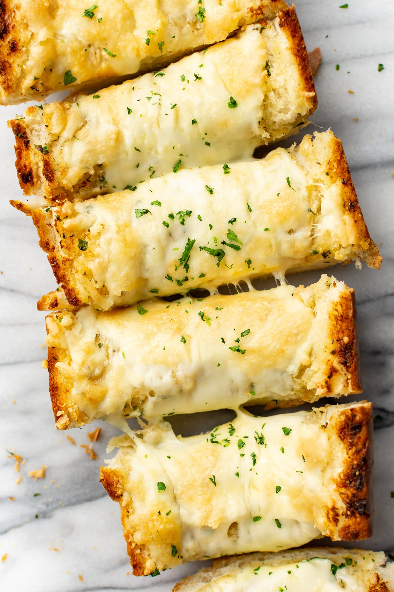

Cheesy Garlic Bread

Description
The Best Cheesy Garlic Bread!
Buttery, perfectly toasted, and loaded with parmesan and mozzarella, this
cheesy garlic bread recipe is one you'll want to serve with every meal!
Ingredients
- 1 (16 ounce) loaf French bread (cut in half lengthwise)
- 1/2 cup butter (1 stick) (softened)
- 4 cloves garlic (minced)
- 1 teaspoon garlic powder
- 1/2 teaspoon Italian seasoning
- 1 tablespoon fresh parsley (chopped + extra for serving)
- 1/4 teaspoon salt
- Pepper to taste
- 1 cup freshly grated parmesan cheese
- 2 cups shredded mozzarella cheese
Instructions
- Take the butter out of the fridge at least an hour prior to starting the recipe.
- Preheat your oven to 400F and move the rack to the top third of the oven.
- Add the butter, garlic, garlic powder, Italian seasoning, parsley, and salt & pepper to a small bowl.
Mash together with a fork until well combined.
- Cut the loaf of bread in half horizonally (try to get the two halves as equally sized as possible)
and place each piece cut-side up on a baking sheet.
- Spread the butter over the cut side of each half of bread, then top each half with the parmesan,
followed by the mozzarella.
- Bake for 12 minutes, then broil for a few minutes (watch it carefully so it doesn't burn!) until
the cheese is golden and bubbly.
- Cut into slices and serve immediately with extra parsley sprinkled over top.
Return to Homepage